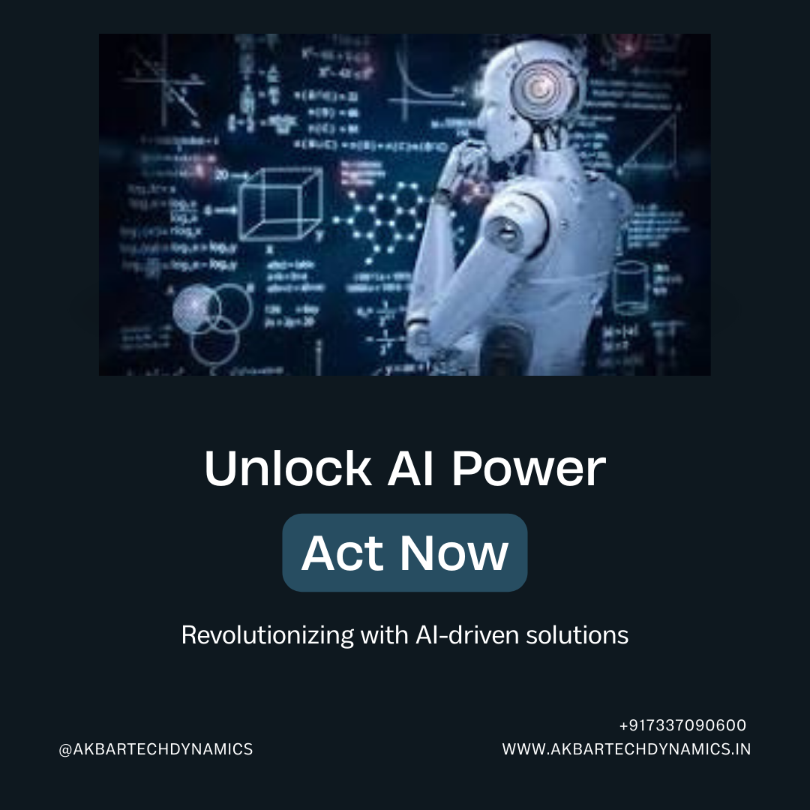

Did You Know? Our AI-Driven Solutions Make Project Completion a Breeze! From Data Analysis to Natural Language Processing, We've Got You Covered
Introduction
In today's fast-paced academic and professional environments, completing projects efficiently and effectively is crucial. Did you know? Our AI-driven solutions make project completion a breeze! From data analysis to natural language processing, we've got you covered. Let's explore how these cutting-edge technologies can transform the way you approach your projects and help you achieve outstanding results.
Revolutionizing Project Completion with AI-Driven Solutions
The Power of Artificial Intelligence in Projects
Artificial Intelligence (AI) has revolutionized various aspects of our lives, and project management is no exception. By leveraging AI, we can automate complex tasks, analyze vast amounts of data, and generate insights that drive better decision-making. Our AI-driven solutions are designed to streamline project workflows, making it easier for you to focus on what truly matters.
Key Benefits of AI-Driven Project Management
Efficiency: Automate repetitive tasks and reduce manual effort.
Accuracy: Minimize errors with precise data analysis and processing.
Speed: Accelerate project timelines with quick data processing and insights.
Scalability: Handle projects of any size with ease.
Innovation: Leverage advanced technologies to stay ahead of the curve.
Transformative AI Technologies for Project Success
Advanced Data Analysis
Data is the backbone of any project, and analyzing it effectively is crucial for success. Our AI-driven data analysis tools can process large datasets quickly, identify patterns, and provide actionable insights. This enables you to make informed decisions and optimize your project outcomes.
Natural Language Processing (NLP)
Natural Language Processing (NLP) is a branch of AI that focuses on the interaction between computers and human language. Our NLP solutions can help you with tasks such as text analysis, sentiment analysis, and automated content generation. By understanding and processing natural language, NLP tools enhance your ability to communicate and analyze textual data efficiently.
Predictive Analytics
Predictive analytics uses AI to forecast future trends and outcomes based on historical data. Our predictive analytics tools can help you anticipate challenges, identify opportunities, and make data-driven decisions. This proactive approach ensures your projects are always on the right track.
Streamlining Data Analysis with AI
Automated Data Cleaning
Data cleaning is a time-consuming but essential task. Our AI-driven solutions automate data cleaning processes, identifying and correcting errors, filling in missing values, and ensuring your data is accurate and reliable.
Pattern Recognition
AI excels at recognizing patterns in data that might be missed by human analysts. Our tools can identify trends, correlations, and anomalies, providing you with deeper insights into your data.
Visualization Tools
Data visualization is key to understanding complex information. Our AI-powered visualization tools transform raw data into interactive charts, graphs, and dashboards, making it easier to interpret and share insights with stakeholders.
Enhancing Communication with Natural Language Processing
Automated Report Generation
Writing reports can be a tedious task. Our NLP tools can generate comprehensive reports automatically, summarizing key findings and insights from your data. This not only saves time but also ensures consistency and accuracy.
Sentiment Analysis
Understanding the sentiment behind textual data can provide valuable insights. Our NLP solutions can analyze customer feedback, social media posts, and other text data to determine sentiment, helping you gauge public opinion and make informed decisions.
Language Translation
In a globalized world, language barriers can hinder communication. Our NLP tools include language translation capabilities, enabling you to communicate effectively with stakeholders from different linguistic backgrounds.
Predictive Analytics for Proactive Project Management
Risk Assessment
Identifying potential risks early is crucial for project success. Our predictive analytics tools assess historical data to forecast potential risks and challenges, allowing you to develop mitigation strategies in advance.
Opportunity Identification
Predictive analytics can also help you identify new opportunities. By analyzing market trends and consumer behavior, our tools can uncover potential areas for growth and innovation.
Resource Allocation
Efficient resource allocation is key to project success. Our AI-driven solutions analyze project requirements and resource availability, helping you allocate resources optimally and avoid bottlenecks.
Real-World Applications and Success Stories
Case Study: Academic Research Projects
In academia, our AI-driven solutions have helped researchers streamline their projects. By automating data analysis and report generation, researchers can focus on innovative thinking and experimentation. One such success story involved a university team using our tools to analyze large datasets, resulting in groundbreaking research published in a top-tier journal.
Case Study: Business Projects
Businesses have also benefited from our AI-driven project management solutions. A marketing agency used our NLP tools for sentiment analysis, gaining valuable insights into customer feedback and improving their marketing strategies. This led to a significant increase in customer satisfaction and engagement.
Getting Started with Our AI-Driven Solutions
Easy Integration
Our AI-driven solutions are designed for easy integration into your existing workflows. Whether you're using traditional project management tools or advanced platforms, our solutions can seamlessly fit into your processes.
User-Friendly Interface
We prioritize user experience, ensuring our tools are intuitive and easy to use. With minimal training, you can start leveraging the power of AI to enhance your projects.
Flexible Plans
We offer flexible plans to suit different needs and budgets. Whether you're an individual, a small team, or a large organization, we have a plan that fits your requirements.
Conclusion
In today's competitive world, leveraging AI-driven solutions can make all the difference in your project completion process. From data analysis to natural language processing, our tools are designed to simplify your tasks, enhance efficiency, and deliver exceptional results. Did you know? Our AI-driven solutions make project completion a breeze! Embrace innovation and achieve your goals with us.